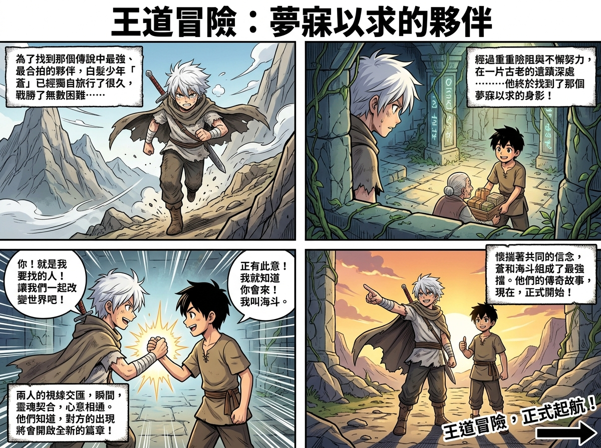

王道冒險：夢寐以求的夥伴

點擊放大查看漫畫
photos/余品靚.jpg
為了找到傳說中最為強大、且能與自己完全合拍的夥伴，白髮少年「蒼」踏上了無盡的旅途。他獨自一人穿梭於危險之中，戰勝了數不清的艱難險阻。經過無數次的重重險阻與不懈努力，蒼終於在一片古老的遺蹟深處，看見了那個他夢寐以求的身影！
「你！就是我要找的人！讓我們一起改變世界吧！」蒼堅定地伸出手。
黑髮少年微笑著握緊他的手：「正有此意！我就知道你會來！我叫海鬥。」
兩人的視線交匯，那一瞬間靈魂彷彿產生了完美的契合，心意相通。他們深深明白，對方的出現將會為彼此開啟全新的篇章。懷揣著共同的信念，蒼與海鬥組成了最吸引人的強大搭檔。
語音朗讀播放器 (TTS)
就緒
1.0x
1.0